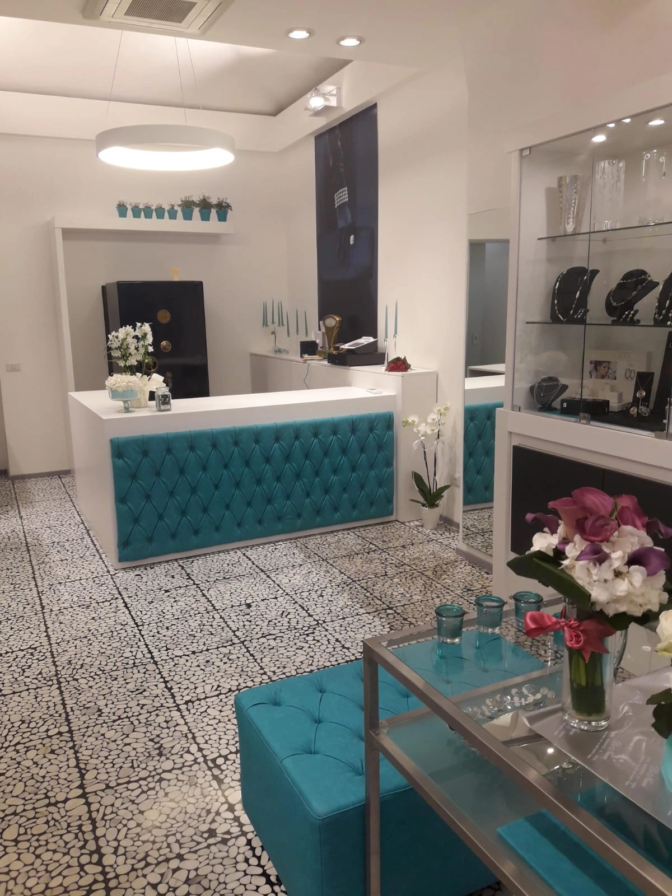
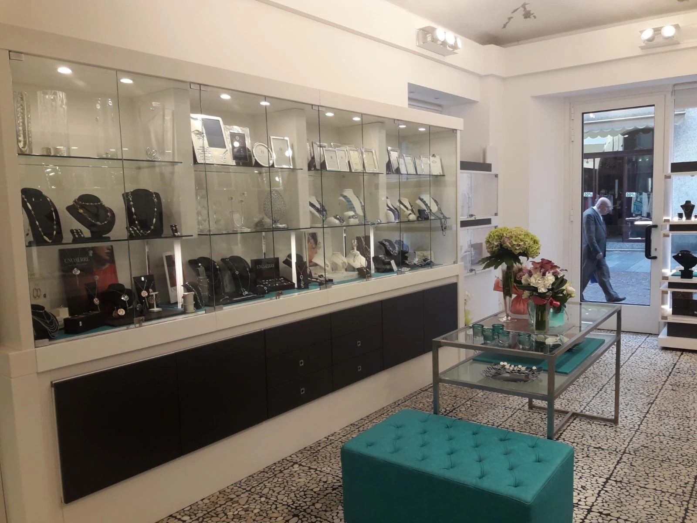

Buongiorno, trovo sempre grande qualità e estrema collaborazione nella scelta di qualsiasi prodotto, ci serviamo da anni presso la gioielleria Di Nucci e Giorgia la titolare è sempre estremamente gentile e capace. Ci trattano sempre con i guanti. La consiglio vivamente a tutti. Buona giornata.
Greggio Argento in provincia di Novara lo trovi solo qui: siamo i suoi unici rivenditori autorizzati.
Il catalogo
Il catalogo Greggio Argento da Di Nucci
Qui sotto c'è il Greggio Argento che teniamo, linea per linea. In vetrina ne vedete una parte, perché la tavola Greggio è più larga di quello che entra in un ripiano: il resto lo mostriamo in negozio. Se dovete completare un servizio che avete già in casa, portate una foto o il pezzo stesso. E se cercate un regalo senza sapere quale va bene lo stesso: cominciamo dalla tavola.
Champagne e cocktail, il bar di Greggio Argento
I servizi da tè e caffè Greggio Argento
I candelabri e i candelieri Greggio Argento
Perché da noi
Gli unici rivenditori Greggio Argento in provincia di Novara
In tutta la provincia di Novara Greggio Argento lo vendiamo solo noi, e per voi questo cambia una cosa concreta: sull'argenteria quello che distingue un pezzo di casa madre è il punzone, e da un rivenditore autorizzato quel punzone ve lo leggiamo insieme prima che compriate.
E se un giorno il pezzo ha bisogno di assistenza non dovete cercare dove portarlo. Lo riportate qui, e al marchio lo mandiamo noi con i suoi documenti. Fuori dal canale autorizzato quel passaggio non c'è. Il negozio è in corso Cavour 10C, dentro il centro di Novara.
In negozio, il nostro mestiere è accompagnarvi nella scelta. Sull'argento la domanda che torna sempre è come si tiene: quanto va lucidato, cosa lo annerisce, cosa regge la lavastoviglie. Sono risposte che cambiano da pezzo a pezzo, e conviene darvele con l'oggetto in mano.


Personale meraviglioso, cordiale, gentile e disponibile, ci ha accompagnato pazientemente nella scelta delle fedi, consigliandoci con discrezione.
Professionalità, cortesia, altissima qualità: Gioielleria Di Nucci è sinonimo di Eccellenza da sempre. 💎 💍 🔹 💎 💍
Diremo sempre grazie a Giorgia per tutto! Cordialità e professionalità e’ tutto ciò che la distingue. Grazie a lei abbiamo trovato le fedi! Simbolo del nostro amore per sempre!
Storica gioielleria di Viale Roma, trasferitasi in centro da molti anni. Paolo Cornalba.
Ottima esperienza, la titolare ha compreso al volo le nostre esigenze, molto pragmatica e attenta. Consegna nei tempi previsti, ottimo servizio e prodotti di qualità.
Gioielleria molto fornita, personale gentilissimo. Posto in cui tornerò assolutamente per ogni occasione.
Giorgia ha avuto da subito un rapporto molto confidenziale con noi e ci ha guidato nella scelta delle nostre bellissime fedi. È stata un punto di riferimento molto importante e mette molta passione nel suo lavoro.
Eccezionale! Qualità altissima e Giorgia è una persona davvero squisita e super professionale. Consigliatissimo!!!
La scelta delle fedi è sempre un po' complicata perché ci sono tantissimi modelli. Grazie a Giorgia che ci ha consigliato tra le varie opzioni. Ottimo rapporto qualità prezzo.
Ottimo.
Le signore della gioielleria Di Nucci sono state gentilissime nell'accogliere ogni nostra necessità e ci hanno offerto un servizio impeccabile.
Disponibilità, gentilezza, svolgono il loro lavoro con massima professionalità e competenza…
Giovanna e Giorgia le migliori! Sempre disponibili e gentili! Sanno consigliare con ottimo gusto! La consiglio a chiunque, sia per la scelta delle fedi che per qualsiasi altro regalo o acquisto! Grazie.
Professionalita' gentilezza disponibilita'... ottima gioielleria.
Assortimento di fedi e gioielli vasto e grande capacità di consigliare a seconda dei budget. Disponibilità e gentilezza sono una garanzia. È diventa il nostro punto di riferimento per i preziosi.
Ero alla ricerca di un pezzo particolare (una fede sarda), ho girato il mondo e ovunque sono stato messo alla porta…
Giorgia è stata fantastica con noi, ci ha fatto anche stringere le fedi che due settimane prima erano diventate larghe! Strepitosa e molto disponibile!
Storica gioielleria. Proprietari molto disponibili e cortesi. Prezzi competitivi. La consiglio vivamente.
Abbiamo scelto delle fedi in oro giallo semplicissime, ma anche molto comode. Consigliato!
Giorgia e Giovanna semplicemente perfette e impeccabili.
Dopo aver girato diverse gioiellerie, abbiamo notato due piccole vetrine eleganti e semplici, entrando siamo stati accolti da una signora gentilissima che ha proposto una serie di soluzioni estremamente adatte alle nostre aspettative, che dire, davvero bravi, disponibili e, soprattutto, veloci: in meno di due settimane le fedi erano pronte per essere incise, davvero eccezionali, per un ricordo che rimarrà con noi per sempre.
Abbiamo comprato le nostre fedi con loro. Sia la mamma che la figlia sono state molto gentili. Sempre che ho bisogno di qualcosa vado da loro. Il nuovo negozio è molto bello.
Giorgia è davvero molto disponibile e carica! Tempi veloci e assistenza ottima!
Davvero disponibili e coinvolgenti! Le fedi sono stupende e la consulenza per la scelta professionale!
Per le nostre fedi ci siamo affidati a Giorgia, la quale ci ha guidati nella scelta, tenendo conto dei nostri gusti e delle nostre mani, consigliandoci al meglio. La gioielleria Di Nucci offre veramente una gran quantità di svariati modelli per cui sicuramente avrete solo l'imbarazzo della scelta. Inoltre, i tempi di consegna sono stati veramente celeri. Siamo molto soddisfatti della nostra scelta e grati a Giorgia e alla sua mamma! Milena e Matteo.
Abbiamo acquistato da loro le fedi per il nostro matrimonio e dei pensieri per i nostri testimoni. Giorgia è stata come sempre una conferma, ci ha aiutato a scegliere le fedi per noi più indicate ed è stata con noi super disponibile quando abbiamo richiesto un specifico oggetto come pensiero per i nostri testimoni. È riuscita a farci arrivare in gioielleria quello che cercavamo entro i tempi richiesti, non potremo che tornare qui per i prossimi eventi.
Vieni a vedere Greggio Argento in negozio
Corso Cavour 10C, a Novara. Siamo aperti da martedì a sabato, 9:30–12:30 e 15:30–19:00. Se cercate un pezzo che in vetrina non avete visto, chiamateci allo 0321 629929.